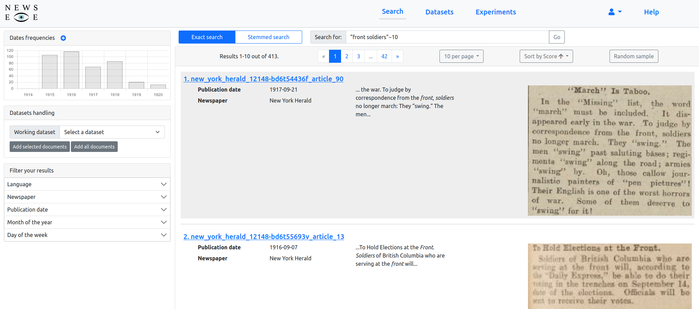
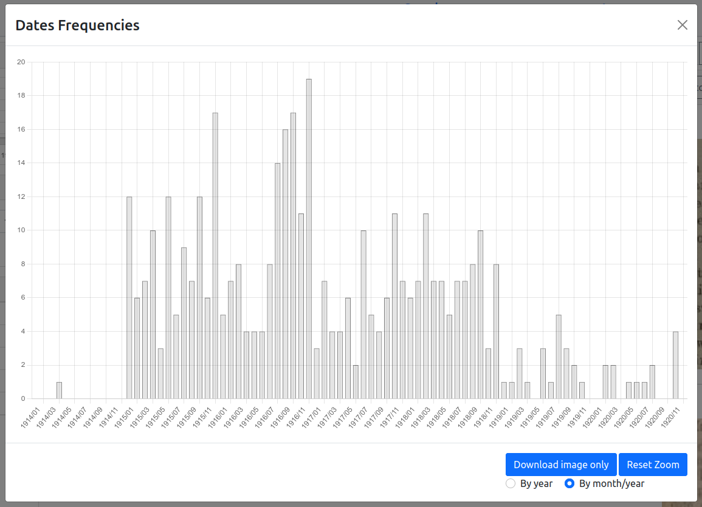
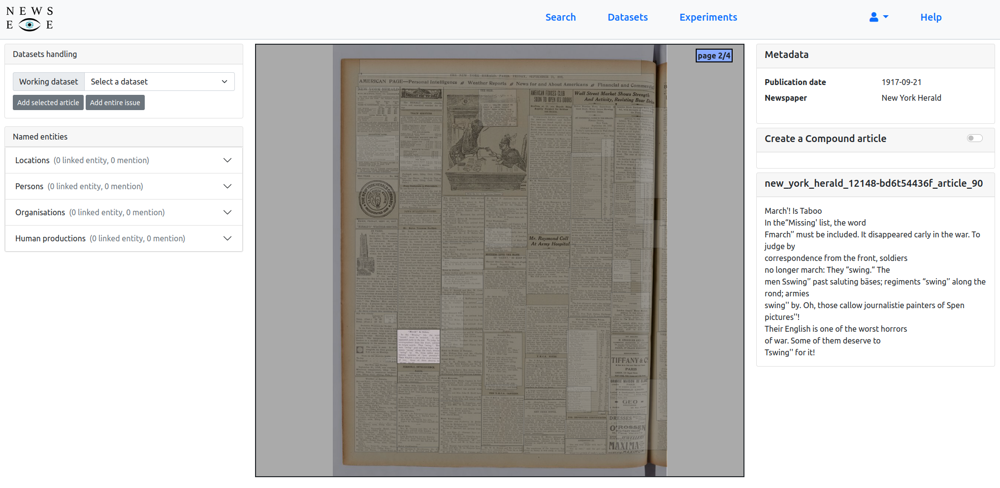
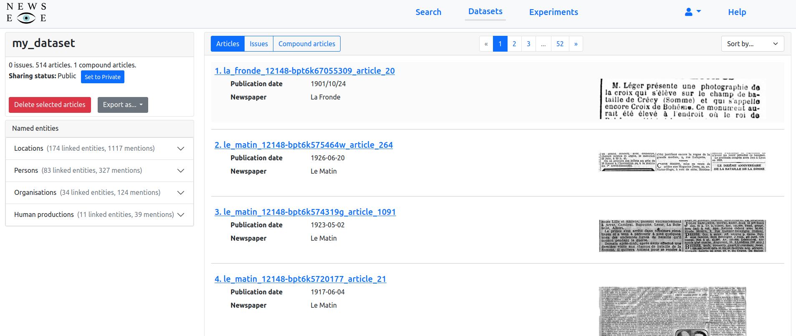
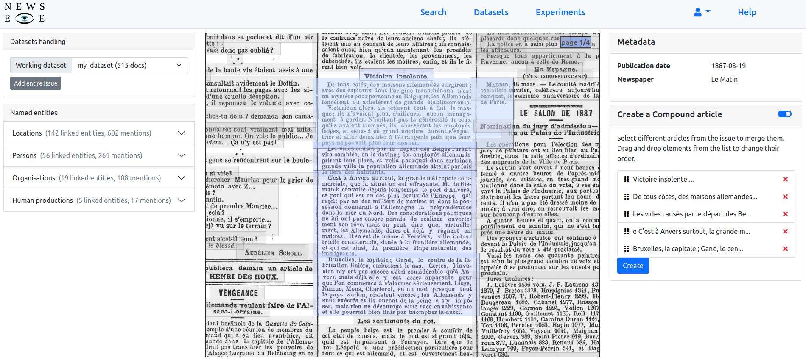
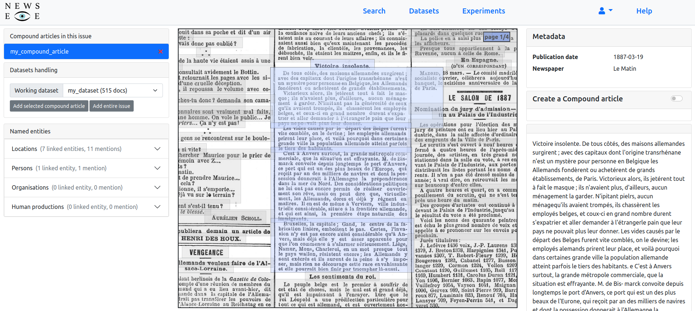

2. Advanced Search and Exploration
Contents
2. Advanced Search and Exploration¶
We will see in this chapter how to use the platform of the NewsEye project to create and analyse a corpus of newspapers articles. The first step is to go to https://platform2.newseye.eu and click on the Sign up link to create an account. Once created, you are redirected to the main page of the platform where you can see the list of newspaper issues available.
a. Searching with the NewsEye platform¶
By clicking on the Search link at the top of the page, you will be presented with a simple field where you can input keywords to search for articles. You can choose to do an exact search, where the system will try to find documents containing exactly the query terms, or you can choose the stemmed search where the system will try to find documents containing different variations of the query terms. In the latter, the stop words are also removed. In both case you can search for phrases by adding quotes around your query terms. For example, the query “new york” will try to match documents containing those two terms next to each other. You can increase the number of matched documents by specifying the number of gaps between two terms: the query “front soldiers”~10 will match documents containig those two terms as long as they are separated by at most 10 tokens.
Here is an example of a results page returned by the system after a search.  First, a list of the articles returned by the system is presented. by default, the results are ordered by the relevancy score computed by the search engine. You can choose to sort the result differently by clicking on the Sort by… button above the results. You can also choose the number of documents displayed by page. Each article in the list displays a snippet of its text containing the matching keywords of your query, along with some metadata. You can get a quick glance of the results by clicking on the Random sample button. This will display a list of articles picked at random among all the results. This can be useful to assure that the keywords you chose match what you want to see.
Another tool allowing you to get an idea about the documents returned by the system is the frequency graph shown on the top-left corner of the page. This graph gives a temporal distribution of the results. Clicking on the + symbol displays a new modal window where the graph can be seen in more details. The frequency can be displayed by year or by month for more details. 
Facets are available next to the results list, on the left-hand side of the page. You can use those to filter the list of results against various metadata (the language of documents, the newspaper the articles come from, the publication date). In some cases, you will also be able to select articles containing various named entities.
When you click on the title of a result or the picture of an article, you are redirected to the viewer page. Here, you can navigate through the pages of the newspaper and display the automatically extracted text of each article when you click on one. For some newspapers, named entities have been extracted and can be visaulised on this same page. 
b. Create and export corpus¶
Using the NewsEye platform, you have the possibility to create research corpora containing various articles from different newspapers. These datasets are used to gather articles relevant to a particular use case. Click on the Datasets link on top of the page to create a new dataset or access the ones you have previously created. Once you have created a dataset, there are several places in the platform where you can add articles to your dataset.
First, on the results page, after a search, there is a panel titled Datasets handling. The first thing to do is to select the dataset you want to add documents to in the Working dataset field. Once this is done, you can add individual articles by selecting them (click on them, without clicking on the title or the image). A selected article is surrounded by a blue border. You can then click on the Add selected articles button to add the selected articles to the working dataset. Another option is to add all results of the search to your dataset. This can be done by clicking the Add all documents button. Please note that depending on the number of results, this operation can take a bit of time.
Another place where it is possible to add articles to a dataset is the viewer page. There is also a small panel Datasets handling on the top-left corner of the page. It works in the same way as the one in the results page. You can add individual articles or the entire issue to the working dataset.
You can view the documents added to a dataset from the Datasets page, after clicking on the dataset you are interested in. Click on a dataset you have created to access its content. It will look something like this.  You can view on this page the documents you have already added to your dataset, along with all the named entities present in these documents. From this page, you can also export your dataset in various formats. The first one is a ZIP file gathering text files for each article in your dataset with the extracted text of the articles. You can also choose to export the dataset in the JSON format. This export is more complete than the previous one as it contains the named entities for each article, along with an URL to the image of the article.
c. Compound articles¶
As you will notice using the platform, the article separation is far from perfect and you’ll often identify pieces of articles. You have the ability from the viewer page to merge small text blocks together to create a compound article that can then be added to a dataset as any other article.  To start the creation of a compound article, you have to activate this mode by clicking on the button next to the Create a compound article panel. You can then click on article parts in the viewer. As you do so, they will be added to the current compound and can be seen in the panel. Once you are done, click on the Create button. A modal window will appear, presenting you with the merge texts of the article parts you have selected. You then give a title to your article and validate. The created compound article will appear in a new panel in the top-left corner of the page.  You can then add those compound articles by clicking on them to select them. A new button will then